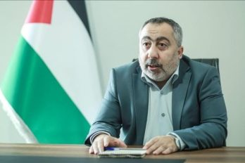
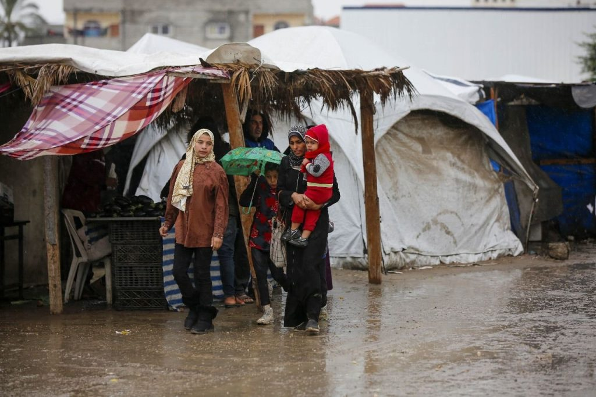
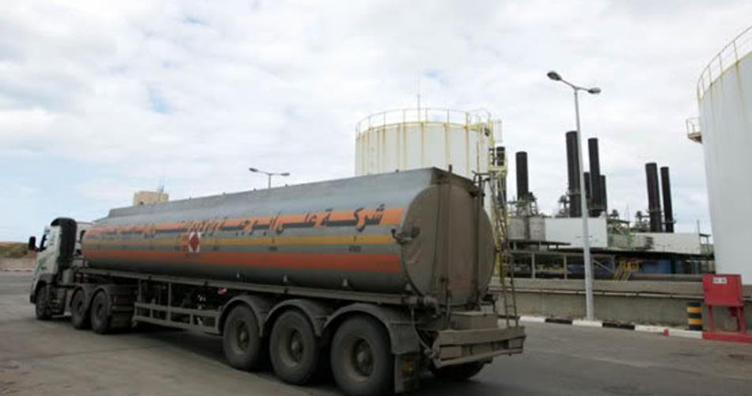
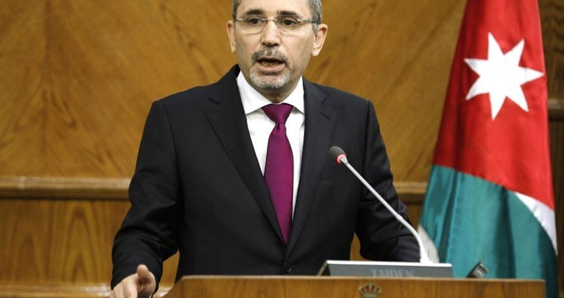

Berita Terkait Palestina

Hamas: Pembicaraan tahap kedua gencatan senjata Gaza akan dimulai awal minggu depan, Baca selengkapanya di sini

Berita UNRWA: Penderitaan warga Palestina yang terusir terus berlanjut saat mereka kembali ke rumah mereka yang hancur di Gaza, Baca selengkapnya disini

Qatar kirim tambahan 15 juta liter bahan bakar ke Gaza, Baca selengkapnya disini

Yordania mendukung rencana Mesiruntuk membangun kembali Gaza tanpa pengungsi Baca selengkapnya disini